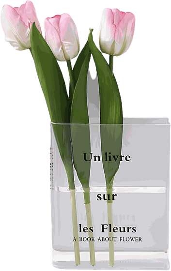
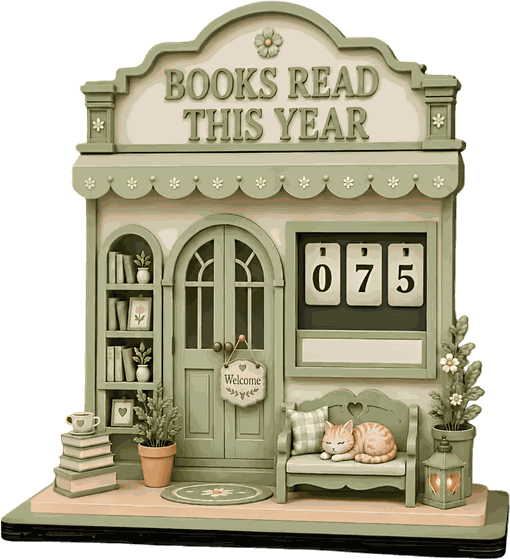
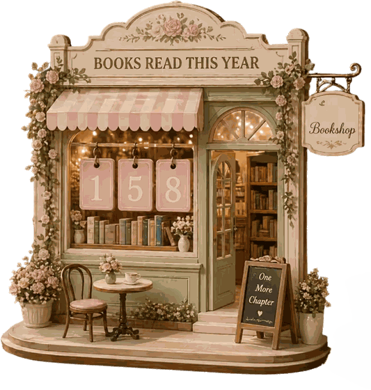
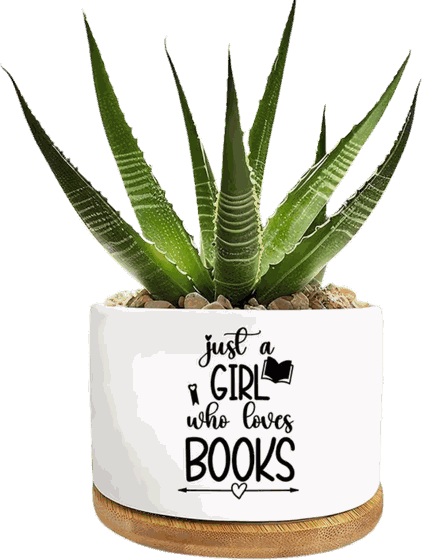
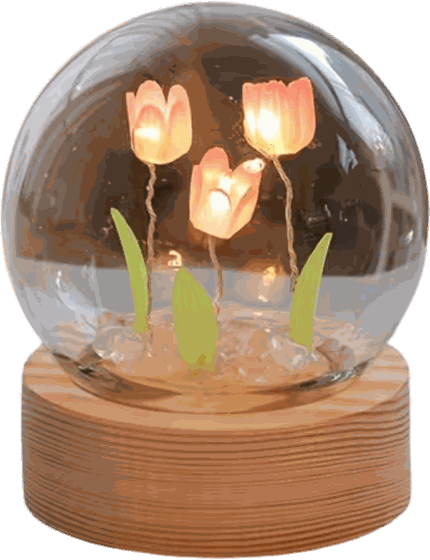
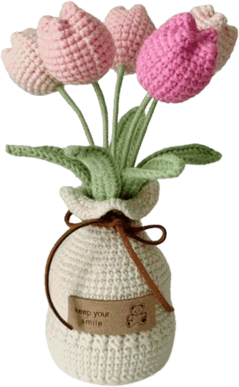
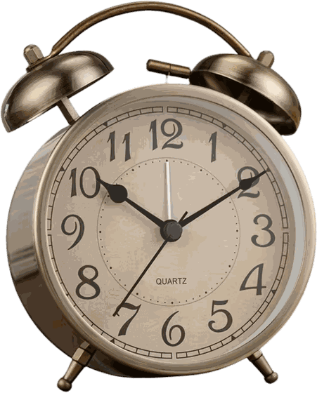

Uz čitanje
Vaza u obliku knjige
Prozirni akril
Još nema recenzija Napiši prvu
10,00 €
Na zalihi, šalje se u dva radna dana
- Brza dostava u roku od dva do tri dana
- Besplatna dostava za narudžbe iznad 50 eura
- Zamotano rukom, uz razglednicu iz knjižare
Prozirna vaza koja izgleda kao otvorena knjiga. Tri tulipana i polica odmah izgleda kao izlog.
Rosa
Prozirna akrilna vaza oblikovana kao otvorena knjiga, s natpisom Un livre sur les Fleurs. Uska je pa stane između knjiga na polici.
Tri tulipana i polica odmah izgleda kao izlog. Puni se s malo vode, jer je plića nego što se čini.
Ovu knjigu još nitko nije ocijenio. Ako si je pročitala, napiši mi par rečenica i objavit ću ih ovdje pod tvojim imenom.
- Materijal
- Prozirni akril
- Polica
- Uz čitanje
Često pitate
Je li Vaza u obliku knjige na zalihi?
Da, Vaza u obliku knjige je na zalihi i šalje se u roku od dva do tri radna dana. Dostava je besplatna za narudžbe iznad 50 eura.
Od čega je Vaza u obliku knjige napravljen?
Materijal je p.rozirni akril Svaki komad je malo drugačiji, pa se nijansa zna razlikovati od fotografije.
Koliko košta Vaza u obliku knjige?
Vaza u obliku knjige košta 10,00 eura.
S iste police

Brojač pročitanih knjiga, zeleni 10,00 €
Brojač pročitanih knjiga, rozi 10,00 €
Tegla za biljku, Just a girl who loves books 10,00 €
Noćna lampa s tulipanima 10,00 €
Heklani tulipani u vazici 10,00 €
Budilnik s dva zvona 10,00 €